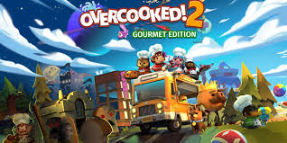
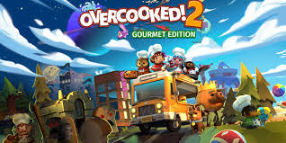

Nintendo, fondée en 1889 au Japon, a commencé comme fabricant de cartes à jouer avant de devenir un géant du jeu vidéo.
Elle a révolutionné l'industrie avec des consoles emblématiques comme la NES, la Game Boy et la Switch.
Ses franchises mondialement connues incluent Super Mario, The Legend of Zelda, et Pokémon.
Nintendo se distingue par son innovation, combinant gameplay créatif et technologies accessibles.
Aujourd'hui, elle demeure un leader de l'industrie, valorisant le divertissement familial. Son héritage façonne encore la culture du jeu vidéo moderne.